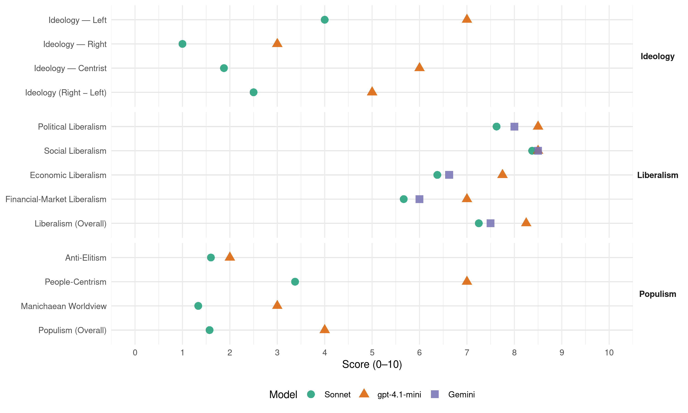

PSOE (Spain, 2008)
manifesto_id 33320_200803
Get full text: This site shows derived annotations and short verbatim quotes only. The full manifesto text is © Manifesto Project / WZB — obtain it via manifesto-project.wzb.eu using the manifesto_id above.
Headline scores
| Dimension | Sonnet | gpt-4.1-mini | Gemini |
|---|---|---|---|
| Populism (Overall) | 1.6 | 4.0 | – |
| Anti-Elitism | 1.6 | 2.0 | – |
| People-Centrism | 3.4 | 7.0 | – |
| Manichaean Worldview | 1.3 | 3.0 | – |
| Ideology (Right − Left) | 2.5 | 5.0 | – |
| Liberalism (Overall) | 7.2 | 8.2 | 7.5 |
| Political Liberalism | 7.6 | 8.5 | 8.0 |
| Social Liberalism | 8.4 | 8.5 | 8.5 |
| Economic Liberalism | 6.4 | 7.8 | 6.6 |
| Financial-Market Liberalism | 5.7 | 7.0 | 6.0 |
Evidence per dimension
Economic Liberalism
Gemini · score 7.0 · verified · chunk 1
“reforzar la competitividad de la economía española”
buenos resultados está dando, para reforzar la competitividad de la economía española, para simplificar, en aras de ese propósito, nuestro
Gemini · score 6.0 · verified · chunk 2
“mejorando su capacidad competitiva”
cooperativas y sociedades laborales se adapten a los nuevos retos de la economía globalizada estimulando su desarrollo, mejorando su capacidad competitiva y de respuesta
Gemini · score 6.0 · verified · chunk 3
“competitividad de nuestras empresas”
objetivos de mejorar la equidad y la justicia del sistema fiscal y la competitividad de nuestras empresas. Asimismo, avanzaremos decididamente
Gemini · score 7.0 · verified · chunk 4
“fomento de la competencia en los mercados”
modernización. También debe orientarse hacia el fomento de la competencia en los mercados en los que operan nuestras empresas y nuestros trabajadores
Gemini · score 7.0 · verified · chunk 5
“promover la competencia en los mercados”
reformas destina-das a garantizar el suministro, promover la competencia en los mercados, y fomentar la sostenibilidad medioambiental mediante el impulso
Gemini · score 6.0 · verified · chunk 6
“defensa del interés público y general y las dinámicas del mercado”
políticas culturales han de encontrar un equilibrio entre la defensa del interés público y general y las dinámicas del mercado, a favor de la democratización, la diversidad
Gemini · score 7.0 · verified · chunk 7
“Zona de Libre Cambio euromediterránea”
a través de la creación de una Zona de Libre Cambio euromediterránea, sostenible social y medioambientalmente, reducir la
Gemini · score 7.0 · verified · chunk 8
“creación de una Zona de Libre Cambio”
Nos comprometemos a fomentar el comercio, el turismo y las inversiones productivas a través de la creación de una Zona de Libre Cambio euromediterránea, sostenible social
gpt-4.1-mini · score 8.0 · verified · chunk 1
“crecimiento económico al servicio del bienestar social”
Es decir, para que pusiéramos el crecimiento económico al servicio del bienestar social; para que ejerciéramos el poder de otra forma, más dialogante, más transparente, más respetuosa con todos los ciudadanos y con las instituciones de nuestro país; para que, bajo nuestra dirección, España recuperase la promoción de la paz y la cooperación entre los pueblos como eje de su política exterior.
gpt-4.1-mini · score 7.0 · verified · chunk 2
“fomento de la economía social e impulso al trabajo autónomo”
El compromiso socialista ha sido igual de firme en materia de fomento de la economía social. Este importante sector, que genera empleo de calidad, cohesión social y territorial, ha visto fortalecido el diálogo institucional al revitalizarse el Consejo para el Fomento de la Economía Social e incorporarse al Observatorio de las PYMES.
gpt-4.1-mini · score 8.0 · verified · chunk 3
“aumento de la productividad y la competitividad de la economía”
La educación aumenta la productividad y la competitividad de la economía, y por tanto es positiva para el crecimiento económico en el largo plazo.
gpt-4.1-mini · score 7.0 · verified · chunk 4
“la política industrial apoyará la transición hacia actividades intensivas en conocimiento”
La política industrial apoyará la transición hacia actividades intensivas en conocimiento, que utilicen tecnologías avanzadas e innovadoras, facilitando su internacionalización.
gpt-4.1-mini · score 8.0 · verified · chunk 5
“promover la competencia en los mercados energéticos”
Fomento de la competencia en los mercados energéticos. Será necesario continuar eliminando las barreras que dificultan la entrada en los mismos, seguir mejorando el diseño del mercado mayorista de electricidad (que ya es, en la actualidad, la suma de un conjunto de submercados), establecer un mecanismo de subastas para la adquisición del gas asociado a las tarifas de último recurso, promover la creación de mercados secundarios de gas natural, y concluir el proceso de redefinición del modelo tarifario, cuyo horizonte es la aplicación del principio de recuperación de costes y el establecimiento de “tarifas de último recursos”.
gpt-4.1-mini · score 8.0 · verified · chunk 6
“potenciaremos el fomento de la participación del sector privado en la financiación de la cultura”
Potenciaremos el fomento de la participación del sector privado en la financiación de la cultura y una regulación del patrocinio y la responsabilidad social corporativa para impulsar la presencia de las entidades privadas en las nuevas actividades culturales.
gpt-4.1-mini · score 8.0 · verified · chunk 7
“la reactivación de la Estrategia de Lisboa, para conseguir hacer de Europa la economía más competitiva y de mayor nivel de conocimiento del mundo”
A fin de gestionar mejor la globalización, concentraremos nuestros esfuerzos en la reactivación de la Estrategia de Lisboa, para conseguir hacer de Europa la economía más competitiva y de mayor nivel de conocimiento del mundo, orientada al desarrollo sostenible con más y mejores empleos y mayor cohesión social.
gpt-4.1-mini · score 8.0 · verified · chunk 8
“fomentar el comercio, el turismo y las inversiones productivas”
…Nos comprometemos a fomentar el comercio, el turismo y las inversiones productivas a través de la creación de una Zona de Libre Cambio euromediterránea, sostenible social y medioambientalmente, reducir la deuda externa y el déficit de estos países y configurar un mercado euromediterráneo de la energía y una red de transportes de carácter regional…
Sonnet · score 6.0 · verified · chunk 1
“simplificar nuestro sistema fiscal y seguir bajando la carga tributaria”
para simplificar, en aras de ese propósito, nuestro sistema fiscal y seguir bajando la carga tributaria, sobre todo de las personas con menores rentas
Sonnet · score 6.0 · verified · chunk 2
“mejorando su capacidad competitiva”
estimulando su desarrollo, mejorando su capacidad competitiva y de respuesta a las nuevas necesidades sociales
Sonnet · score 7.0 · verified · chunk 3
“competitividad de nuestras empresas”
rebajas impositivas esencialmente ligadas a los objetivos de mejorar la equidad y la justicia del sistema fiscal y la competitividad de nuestras empresas
Sonnet · score 7.0 · verified · chunk 4
“fomento de la competencia en los mercados”
debe orientarse hacia el fomento de la competencia en los mercados en los que operan nuestras empresas y nuestros trabajadores
Sonnet · score 6.0 · verified · chunk 5
“promover la competencia en los mercados”
garantizar el suministro, promover la competencia en los mercados, y fomentar la sostenibilidad medioambiental mediante el impulso a las energías renovables
Sonnet · score 6.0 · verified · chunk 6
“fomento de la participación del sector privado”
se potenciara el fomento de la participación del sector privado en la financiación de la cultura y mejorando la regulación del patrocinio y la responsabilidad social de las empresas
Sonnet · score 6.0 · verified · chunk 7
“hacer de Europa la economía más competitiva”
reactivación de la Estrategia de Lisboa, para conseguir hacer de Europa la economía más competitiva y de mayor nivel de conocimiento del mundo
Sonnet · score 7.0 · verified · chunk 8
“creación de una Zona de Libre Cambio euromediterránea”
Nos comprometemos a fomentar el comercio, el turismo y las inversiones productivas a través de la creación de una Zona de Libre Cambio euromediterránea, sostenible social y medioambientalmente
Financial-Market Liberalism
Gemini · score 6.0 · verified · chunk 2
“líneas de microcréditos para favorecer”
en colaboración con los agentes económicos, líneas de microcréditos para favorecer la integración social de los drogodependientes
Gemini · score 6.0 · verified · chunk 3
“apoyo al capital riesgo”
Seguiremos desarrollando instrumentos de apoyo al capital riesgo en las fases de arranque y semilla de Empresas de Base Tecnológica
Gemini · score 7.0 · verified · chunk 4
“correcto funcionamiento y transparencia de los mercados de valores”
y la CNMF velará por el correcto funcionamiento y transparencia de los mercados de valores, así como por una conducta adecuada de los intermediarios
Gemini · score 7.0 · verified · chunk 5
“productos financieros como depósitos, fondos de inversión”
etiquetado como herramienta distintiva de cumplimiento de criterios sociales y medioambientales, promoviendo la producción cívica o responsable. Asimismo se promoverá entre la ciudadanía la contratación de ahorro socialmente responsable a través de productos financieros como depósitos, fondos de inversión, seguros y planes de pensiones.
Gemini · score 6.0 · verified · chunk 6
“mejorando su posición en el mercado financiero”
puedan utilizar sus derechos como fuentes de financiación, mejorando su posición en el mercado financiero. Para este fin se creará una línea de
Gemini · score 4.0 · verified · chunk 7
“tasar la especulación financiera”
crear un fondo de relocalizaciones, así como tasar la especulación financiera y regular a escala europea los fondos de
gpt-4.1-mini · score 7.0 · verified · chunk 1
“superávit fiscal e incrementando el Fondo de Reserva de la Seguridad Social”
Hemos logrado, con los interlocutores sociales, que haya 1.500.000 nuevos empleos estables. Hemos reducido la tasa de paro al nivel más bajo de nuestra historia democrática, tres puntos menos que en 2004. Me comprometí a fortalecer nuestra economía. Lo hemos conseguido multiplicando por tres la productividad, rebajando en 12 puntos la deuda pública, consiguiendo en cada uno de los cuatro años superávit fiscal e incrementando el Fondo de Reserva de la Seguridad Social hasta cerca de 50.000 millones.
gpt-4.1-mini · score 7.0 · verified · chunk 4
“Reestructurar la supervisión financiera en torno a dos instituciones: Banco de España y Comisión Nacional de Mercados Financieros”
Reestructurar la supervisión financiera en torno a dos instituciones: Banco de España y Comisión Nacional de Mercados Financieros (CNMF), mejorando algunos de los solapamientos institucionales actuales.
Sonnet · score 6.0 · verified · chunk 2
“Promoveremos la suscripción de seguros de crédito hipotecario”
Promoveremos la suscripción de seguros de crédito hipotecario e instrumentos de prevención de impagos para mitigar el riesgo de crédito
Sonnet · score 6.0 · verified · chunk 3
“blanqueo de capitales”
Lucha contra la economía sumergida, especialmente contra las formas más complejas de fraude, tales como las que practican las tramas organizadas, el blanqueo de capitales
Sonnet · score 7.0 · verified · chunk 4
“supervisión financiera; la protección del usuario de servicios financieros”
la arquitectura de la supervisión financiera; la protección del usuario de servicios financieros y su educación financiera
Sonnet · score 6.0 · verified · chunk 5
“transparencia y favorecer la competencia”
estableciendo instrumentos que han permitido aumentar la transparencia y favorecer la competencia, y que van desde la celebración de diferentes tipos de subastas
Sonnet · score 5.0 · verified · chunk 6
“mejora de los dispositivos de financiación”
Medidas de apoyo a la creación de empresas, y en concreto a la internacionalización de la actividad y al fortalecimiento de las iniciativas empresariales de las mujeres, así como la mejora de los dispositivos de financiación.
Sonnet · score 4.0 · verified · chunk 7
“tasar la especulación financiera y regular a escala europea”
Abogamos por ampliar el Fondo de Globalización y crear un fondo de relocalizaciones, así como tasar la especulación financiera y regular a escala europea los fondos de riesgo.
Political Liberalism
Gemini · score 8.0 · verified · chunk 1
“respetuosas con todos los ciudadanos y con las instituciones”
ejerciéramos el poder de otra forma, más dialogante, más transparente, más respetuosas con todos los ciudadanos y con las instituciones de nuestro país; para que, bajo nuestra dirección
Gemini · score 8.0 · verified · chunk 2
“de acuerdo con la Constitución”
atención sanitaria del Sistema Nacional de Salud, de acuerdo con la Constitución, en los Estatutos de Autonomía
Gemini · score 8.0 · verified · chunk 3
“ejercicio de una ciudadanía democrática”
La educación es el instrumento más adecuado para garantizar el ejercicio de una ciudadanía democrática, responsable, libre y crítica
Gemini · score 8.0 · verified · chunk 4
“ejercicio de una ciudadanía democrática”
La educación es el instrumento más adecuado para garantizar el ejercicio de una ciudadanía democrática, responsable, libre y crítica, que resulta indispensable
Gemini · score 8.0 · verified · chunk 5
“garanticen la democracia, que mejoren la libertad”
basadas en la confianza en nuestro país y en sus ciudadanos que amplíen derechos, que garanticen la democracia, que mejoren la libertad individual. La legislatura que acaba ha sido una de
Gemini · score 8.0 · verified · chunk 6
“sin libertad de conciencia y de creencias no hay democracia”
es la fuente del pluralismo como elemento esencial de la democracia: sin libertad de conciencia y de creencias no hay democracia. Para los y las socialistas la protección real
Gemini · score 8.0 · verified · chunk 7
“garantía del pluralismo político”
del Estatuto del Concejal, como garantía del pluralismo político. La regulación de una Carta de Derechos
Gemini · score 8.0 · verified · chunk 8
“propiciar la democracia y el Estado de Derecho”
La política del PSOE en Asia buscará siempre reafirmar los Derechos Humanos, propiciar la democracia y el Estado de Derecho, y prevenir y combatir el terrorismo.
gpt-4.1-mini · score 9.0 · verified · chunk 1
“la Ley de Igualdad y la Ley Orgánica contra la Violencia de Género”
La Ley de Igualdad y la Ley Orgánica contra la Violencia de Género simbolizan el cumplimiento de este compromiso y señalan la profundidad del cambio que traerán a nuestra sociedad, en la vida pública, en la vida laboral y económica, y en la vida privada de todos nuestros hogares.
gpt-4.1-mini · score 8.0 · verified · chunk 2
“garantizando el acceso a la cobertura sanitaria en el Sistema Nacional de Salud”
Garantizaremos que todos los ciudadanos puedan ejercer su derecho a tener cobertura sanitaria en el Sistema Nacional de Salud. Garantizaremos que la ciudadanía reciba una atención sanitaria mediante el establecimiento de criterios comunes, que garanticen la mejor calidad asistencial y la práctica de derechos y deberes de los pacientes en condiciones similares, tanto en centros públicos como en privados y concertados.
gpt-4.1-mini · score 7.0 · verified · chunk 3
“la educación es el instrumento más adecuado para garantizar el ejercicio de una ciudadanía democrática”
La educación es el instrumento más adecuado para garantizar el ejercicio de una ciudadanía democrática, responsable, libre y crítica, que resulta indispensable para la constitución de sociedades avanzadas, dinámicas y justas.
gpt-4.1-mini · score 8.0 · verified · chunk 4
“la educación es el instrumento más adecuado para garantizar el ejercicio de una ciudadanía democrática”
La educación es el instrumento más adecuado para garantizar el ejercicio de una ciudadanía democrática, responsable, libre y crítica, que resulta indispensable para la constitución de sociedades avanzadas, dinámicas y justas.
gpt-4.1-mini · score 9.0 · verified · chunk 5
“la calidad de la democracia, a través de la reforma que establece la elección por mayoría de 2/3 en el Parlamento del director de RTVE”
Se ha incrementado la calidad de la democracia, a través de la reforma que establece la elección por mayoría de 2/3 en el Parlamento del director de RTVE, la mejora del control parlamentario, o la garantía de la participación política de la mujer en las listas electorales.
gpt-4.1-mini · score 9.0 · verified · chunk 6
“impulsaremos una Ley sobre el derecho al libre acceso a la información”
Por ello: Impulsaremos una Ley sobre el derecho al libre acceso a la información, que garantice que todos los poderes, autoridades públicas y entidades sostenidas con fondos públicos, faciliten, en tiempo útil, el libre acceso a toda información o documento oficial, con la única excepción de lo que atente a la legislación de protección de datos o de secretos oficiales.
gpt-4.1-mini · score 9.0 · verified · chunk 7
“la defensa de los intereses de España trabajando por la paz, los derechos humanos, la democracia y la justicia social en el mundo”
En la legislatura 2008-2012, debemos seguir avanzando en el objetivo central de nuestro proyecto: la defensa de los intereses de España trabajando por la paz, los derechos humanos, la democracia y la justicia social en el mundo. Abogamos por un impulso decidido de la política exterior que renació con el triunfo del PSOE en marzo de 2004, un impulso acorde con los retos que han surgido desde entonces.
gpt-4.1-mini · score 9.0 · verified · chunk 8
“promover la potenciación del Consejo de Política Exterior”
…garantizar en definitiva el principio de unidad de acción en el exterior. Se promoverá la potenciación del Consejo de Política Exterior, como órgano colegiado consultivo de apoyo al Presidente del Gobierno en sus funciones de dirección y coordinación de la acción del Gobierno en materia de política exterior. Con la participación de representantes de diferentes Departamentos ministeriales…
Sonnet · score 8.0 · verified · chunk 1
“TVE ha dejado de ser un instrumento del Gobierno”
Hoy, TVE ha dejado de ser un instrumento del Gobierno o de un partido para ser independiente. Hoy, se ha abandonado la propaganda institucional.
Sonnet · score 7.0 · verified · chunk 2
“mayor participación social”
Más participación social. Fortaleceremos las relaciones con las organizaciones de pacientes y usuarios
Sonnet · score 7.0 · verified · chunk 3
“ejercicio de una ciudadanía democrática”
La educación es el instrumento más adecuado para garantizar el ejercicio de una ciudadanía democrática, responsable, libre y crítica
Sonnet · score 7.0 · verified · chunk 4
“educación para una ciudadanía democrática”
La educación es el instrumento más adecuado para garantizar el ejercicio de una ciudadanía democrática, responsable, libre y crítica
Sonnet · score 8.0 · verified · chunk 5
“garanticen la democracia, que mejoren la libertad”
Necesitamos políticas basadas en la confianza en nuestro país y en sus ciudadanos que amplíen derechos, que garanticen la democracia, que mejoren la libertad individual.
Sonnet · score 8.0 · verified · chunk 6
“transparencia en la acción pública”
Los socialistas creemos que una democracia sólo puede fundamentarse en la transparencia en la acción pública y, por tanto, en el libre acceso a la información por parte de los ciudadanos
Sonnet · score 8.0 · verified · chunk 7
“garantizar que el Consejo General del Poder Judicial”
reformas necesarias para garantizar que el Consejo General del Poder Judicial desempeñe el papel y las competencias que le corresponden constitucionalmente
Sonnet · score 8.0 · verified · chunk 8
“fomentar la democracia, la consolidación de la paz”
contribuyendo al desarrollo político, social y económico, así como al fomento de la democracia, la consolidación de la paz y la seguridad, la protección y fomento de los Derechos Humanos
Liberalism (Overall)
Gemini · score 8.0 · verified · chunk 1
“reconocimiento y extensión de derechos civiles”
Me comprometí a abrir una nueva etapa de reconocimiento y extensión de derechos civiles, que situaran a España en la vanguardia de
Gemini · score 7.0 · verified · chunk 2
“lucha contra el racismo y la xenofobia”
Impulsar una Estrategia Integral de lucha contra el racismo y la xenofobia: promoviendo las reformas normativas
Gemini · score 7.0 · verified · chunk 3
“ejercicio de una ciudadanía democrática”
La educación es el instrumento más adecuado para garantizar el ejercicio de una ciudadanía democrática, responsable, libre y crítica
Gemini · score 8.0 · verified · chunk 4
“fomento de la competencia en los mercados”
modernización. También debe orientarse hacia el fomento de la competencia en los mercados en los que operan nuestras empresas y nuestros trabajadores
Gemini · score 8.0 · verified · chunk 5
“garanticen la democracia, que mejoren la libertad”
basadas en la confianza en nuestro país y en sus ciudadanos que amplíen derechos, que garanticen la democracia, que mejoren la libertad individual. La legislatura que acaba ha sido una de
Gemini · score 7.0 · verified · chunk 6
“sin libertad de conciencia y de creencias no hay democracia”
es la fuente del pluralismo como elemento esencial de la democracia: sin libertad de conciencia y de creencias no hay democracia. Para los y las socialistas la protección real
Gemini · score 7.0 · verified · chunk 7
“garantía del pluralismo político”
del Estatuto del Concejal, como garantía del pluralismo político. La regulación de una Carta de Derechos
Gemini · score 8.0 · verified · chunk 8
“propiciar la democracia y el Estado de Derecho”
La política del PSOE en Asia buscará siempre reafirmar los Derechos Humanos, propiciar la democracia y el Estado de Derecho, y prevenir y combatir el terrorismo.
gpt-4.1-mini · score 8.0 · verified · chunk 1
“la Ley de Igualdad y la Ley Orgánica contra la Violencia de Género”
La Ley de Igualdad y la Ley Orgánica contra la Violencia de Género simbolizan el cumplimiento de este compromiso y señalan la profundidad del cambio que traerán a nuestra sociedad, en la vida pública, en la vida laboral y económica, y en la vida privada de todos nuestros hogares.
gpt-4.1-mini · score 8.0 · verified · chunk 2
“garantizando el acceso a la cobertura sanitaria en el Sistema Nacional de Salud”
Garantizaremos que todos los ciudadanos puedan ejercer su derecho a tener cobertura sanitaria en el Sistema Nacional de Salud. Garantizaremos que la ciudadanía reciba una atención sanitaria mediante el establecimiento de criterios comunes, que garanticen la mejor calidad asistencial y la práctica de derechos y deberes de los pacientes en condiciones similares, tanto en centros públicos como en privados y concertados.
gpt-4.1-mini · score 7.0 · verified · chunk 3
“La educación aumenta la productividad y la competitividad de la economía”
La educación aumenta la productividad y la competitividad de la economía, y por tanto es positiva para el crecimiento económico en el largo plazo.
gpt-4.1-mini · score 8.0 · verified · chunk 4
“la educación es el instrumento más adecuado para garantizar el ejercicio de una ciudadanía democrática”
La educación es el instrumento más adecuado para garantizar el ejercicio de una ciudadanía democrática, responsable, libre y crítica, que resulta indispensable para la constitución de sociedades avanzadas, dinámicas y justas.
gpt-4.1-mini · score 9.0 · verified · chunk 5
“la calidad de la democracia, a través de la reforma que establece la elección por mayoría de 2/3 en el Parlamento del director de RTVE”
Se ha incrementado la calidad de la democracia, a través de la reforma que establece la elección por mayoría de 2/3 en el Parlamento del director de RTVE, la mejora del control parlamentario, o la garantía de la participación política de la mujer en las listas electorales.
gpt-4.1-mini · score 9.0 · verified · chunk 6
“impulsaremos una Ley sobre el derecho al libre acceso a la información”
Por ello: Impulsaremos una Ley sobre el derecho al libre acceso a la información, que garantice que todos los poderes, autoridades públicas y entidades sostenidas con fondos públicos, faciliten, en tiempo útil, el libre acceso a toda información o documento oficial, con la única excepción de lo que atente a la legislación de protección de datos o de secretos oficiales.
gpt-4.1-mini · score 9.0 · verified · chunk 7
“la defensa de los intereses de España trabajando por la paz, los derechos humanos, la democracia y la justicia social en el mundo”
En la legislatura 2008-2012, debemos seguir avanzando en el objetivo central de nuestro proyecto: la defensa de los intereses de España trabajando por la paz, los derechos humanos, la democracia y la justicia social en el mundo. Abogamos por un impulso decidido de la política exterior que renació con el triunfo del PSOE en marzo de 2004, un impulso acorde con los retos que han surgido desde entonces.
gpt-4.1-mini · score 8.0 · verified · chunk 8
“promover la potenciación del Consejo de Política Exterior”
…garantizar en definitiva el principio de unidad de acción en el exterior. Se promoverá la potenciación del Consejo de Política Exterior, como órgano colegiado consultivo de apoyo al Presidente del Gobierno en sus funciones de dirección y coordinación de la acción del Gobierno en materia de política exterior…
Sonnet · score 8.0 · verified · chunk 1
“derechos civiles, que situaran a España en la vanguardia de la modernidad”
Me comprometí a abrir una nueva etapa de reconocimiento y extensión de derechos civiles, que situaran a España en la vanguardia de la modernidad.
Sonnet · score 7.0 · verified · chunk 2
“Impulsar una Estrategia Integral de lucha contra el racismo y la xenofobia”
Impulsar una Estrategia Integral de lucha contra el racismo y la xenofobia: promoviendo las reformas normativas pertinentes
Sonnet · score 7.0 · verified · chunk 3
“intensificar aún más la lucha contra el fraude fiscal”
Vamos a intensificar aún más la lucha contra el fraude fiscal, para que los que defraudan a la sociedad no pagando sus impuestos tengan cada vez menos posibilidades
Sonnet · score 7.0 · verified · chunk 4
“fomento de la competencia en los mercados”
debe orientarse hacia el fomento de la competencia en los mercados en los que operan nuestras empresas y nuestros trabajadores
Sonnet · score 7.0 · verified · chunk 5
“garanticen la democracia, que mejoren la libertad”
Necesitamos políticas basadas en la confianza en nuestro país y en sus ciudadanos que amplíen derechos, que garanticen la democracia, que mejoren la libertad individual.
Sonnet · score 7.0 · verified · chunk 6
“transparencia en la acción pública”
Los socialistas creemos que una democracia sólo puede fundamentarse en la transparencia en la acción pública y, por tanto, en el libre acceso a la información por parte de los ciudadanos
Sonnet · score 7.0 · verified · chunk 7
“garantizar que el Consejo General del Poder Judicial”
reformas necesarias para garantizar que el Consejo General del Poder Judicial desempeñe el papel y las competencias que le corresponden constitucionalmente
Sonnet · score 8.0 · verified · chunk 8
“reafirmar los Derechos Humanos, propiciar la democracia y el Estado de Derecho”
La política del PSOE en Asia buscará siempre reafirmar los Derechos Humanos, propiciar la democracia y el Estado de Derecho, y prevenir y combatir el terrorismo
Anti-Elitism
gpt-4.1-mini · score 2.0 · verified · chunk 1
“la irresponsable pasividad de la que hizo gala el gobierno de la derecha”
Para que así sea, seguiremos reforzando, frente a la irresponsable pasividad de la que hizo gala el gobierno de la derecha, nuestras Fuerzas y Cuerpos de Seguridad, que han acreditado su eficacia en la lucha contra la inseguridad ciudadana, situada en niveles significativamente bajos en comparación con la media europea.
Sonnet · score 2.0 · verified · chunk 1
“Tras ocho años de gobierno del PP”
Tras ocho años de gobierno del PP, con un crecimiento de la economía significativo, aunque menor que el registrado en la legislatura que ahora acaba, los resultados en el ámbito de la política social ofrecían un triste balance.
Sonnet · score 1.0 · mixed · chunk 2
“gestión rigurosa y transparente”
hemos compaginado, gracias a una gestión rigurosa y transparente, la mejora constante en las prestaciones
Sonnet · score 1.0 · mixed · chunk 3
“conducta de los gobiernos del PP”
Frente a la conducta de los gobiernos del PP, que mientras proclamaban su apoyo incondicional a la empresa mantuvieron el tipo de gravamen en el 35%
Sonnet · score 1.0 · mixed · chunk 4
“tejido empresarial español tiene menor dimensión”
El tejido empresarial español tiene menor dimensión que el europeo; entre sus emprendedores se encuentran menos representados los jóvenes
Sonnet · score 3.0 · verified · chunk 5
“España era un país con un Gobierno autoritario y antiguo”
donde se despreciaba a los manifestantes. España era un país con un Gobierno autoritario y antiguo, que vociferaba mucho y escuchaba poco
Sonnet · score 1.0 · verified · chunk 6
“devolviendo poder a la ciudadanía”
El PSOE pretende seguir devolviendo poder a la ciudadanía y extender los límites de la igualdad incorporando nuevos enfoques e instrumentos.
Sonnet · score 1.0 · verified · chunk 7
“la actitud del PP, que la ha obstruido”
Si no se ha alcanzado en esta legislatura ha sido por la actitud del PP, que la ha obstruido de manera sistemática.
Sonnet · score 1.0 · verified · chunk 8
“política superficial, parcial y eminentemente defensiva”
La nueva política socialista hacia África responde al compromiso contenido en el Programa Electoral de 2004 y supone la superación de una política superficial, parcial y eminentemente defensiva.
Ideology — Centrist
gpt-4.1-mini · score 6.0 · verified · chunk 1
“ejercicio del poder político respetuoso, dialogante, y promotor de los consensos”
Para los próximos cuatro años, los socialistas nos proponemos… garantizar y reforzar, como hemos hecho hasta ahora, la convivencia y la cohesión, mediante un ejercicio del poder político respetuoso, dialogante, y promotor de los consensos.
Sonnet · score 2.0 · verified · chunk 1
“diálogo, la cooperación, la rendición de cuentas”
Me comprometí a un nuevo estilo de gobierno, basado en el respeto, el diálogo, la cooperación, la rendición de cuentas, la transparencia.
Sonnet · score 2.0 · verified · chunk 2
“consenso social y político”
Una ley que nace del consenso social y político, y que termina con la desprotección
Sonnet · score 2.0 · verified · chunk 3
“pacto fiscal con los ciudadanos”
proponemos un pacto fiscal con los ciudadanos, basado en la transparencia, la justicia y la equidad
Sonnet · score 2.0 · verified · chunk 4
“competencia es un medio y no un fin”
la competencia es un medio y no un fin en sí mismo para alcanzar una mayor prosperidad económica y una solidaridad real
Sonnet · score 2.0 · verified · chunk 5
“el diálogo y el consenso”
hay que practicar el diálogo y el consenso, en cada política y en cada ley, por muy amplia que sea la mayoría parlamentaria
Sonnet · score 1.0 · verified · chunk 6
“consensuar con todas las formaciones políticas”
una compartida Estrategia de Seguridad Nacional, que intentaremos consensuar con todas las formaciones políticas en el Parlamento.
Sonnet · score 2.0 · verified · chunk 7
“los ciudadanos en los principales beneficiarios”
no es otro que convertir a los ciudadanos en los principales beneficiarios de una España más fuerte
Sonnet · score 2.0 · verified · chunk 8
“un mundo más justo, más libre y más igualitario”
nos permita jugar el papel que nos corresponde como país situado entre los diez más avanzados del mundo y que trabaja por un mundo más justo, más libre y más igualitario
Ideology — Left
gpt-4.1-mini · score 7.0 · verified · chunk 1
“política social propia del Estado del bienestar más avanzado”
Para los próximos cuatro años, los socialistas nos proponemos (1) alcanzar el pleno empleo, y desarrollar y consolidar la política social propia del Estado del bienestar más avanzado; (2) acometer la modernización de la España del siglo XXI, afrontando con éxito los nuevos retos que se les plantean a todos los países desarrollados; y (3) garantizar y reforzar, como hemos hecho hasta ahora, la convivencia y la cohesión, mediante un ejercicio del poder político respetuoso, dialogante, y promotor de los consensos.
Sonnet · score 5.0 · verified · chunk 1
“avanzar en justicia redistributiva”
permite dirigir los recursos de que dispone el Estado a garantizar la cohesión social, a avanzar en justicia redistributiva y en calidad de vida para todos
Sonnet · score 6.0 · verified · chunk 2
“incremento del Salario Mínimo Interprofesional hasta los 800 euros”
El incremento del Salario Mínimo Interprofesional hasta los 800 euros
Sonnet · score 4.0 · verified · chunk 3
“reducir los desequilibrios sociales”
basada siempre en la primacía de los impuestos directos sobre los indirectos, como medio de reducir los desequilibrios sociales y, de este modo, lograr una mayor igualdad
Sonnet · score 3.0 · verified · chunk 4
“mayor protección de las y los pequeños accionistas”
Medidas que se orientan a la potenciación del papel de la junta general y una mayor protección de las y los pequeños accionistas.
Sonnet · score 4.0 · verified · chunk 5
“la igualdad de la mujer”
Se ha impulsado como nunca antes la igualdad de la mujer. Sin igualdad efectiva de género no hay una verdadera sociedad libre.
Sonnet · score 3.0 · verified · chunk 6
“igualdad de oportunidades entre hombres y mujeres”
teniendo en cuenta la transversalidad de género como principio rector. Establecer, previa evaluación prevista en la Ley de Igualdad, instrumentos para reforzar la existencia de Planes de Igualdad en las empresas.
Sonnet · score 4.0 · verified · chunk 7
“cohesión social y cultural del conjunto de los españoles”
propicien un mayor desarrollo de los derechos y libertades, unos mejores servicios públicos para la ciudadanía, y favorezcan el desarrollo económico y la cohesión social y cultural
Sonnet · score 3.0 · verified · chunk 8
“reducir la deuda externa y el déficit”
Nos comprometemos a fomentar el comercio, el turismo y las inversiones productivas a través de la creación de una Zona de Libre Cambio euromediterránea, sostenible social y medioambientalmente, reducir la deuda externa y el déficit de estos países
Ideology (Right − Left)
gpt-4.1-mini · score 5.0 · verified · chunk 1
“política social propia del Estado del bienestar más avanzado”
Para los próximos cuatro años, los socialistas nos proponemos (1) alcanzar el pleno empleo, y desarrollar y consolidar la política social propia del Estado del bienestar más avanzado; (2) acometer la modernización de la España del siglo XXI, afrontando con éxito los nuevos retos que se les plantean a todos los países desarrollados; y (3) garantizar y reforzar, como hemos hecho hasta ahora, la convivencia y la cohesión, mediante un ejercicio del poder político respetuoso, dialogante, y promotor de los consensos.
Sonnet · score 3.0 · verified · chunk 1
“avanzar en justicia redistributiva”
permite dirigir los recursos de que dispone el Estado a garantizar la cohesión social, a avanzar en justicia redistributiva y en calidad de vida para todos
Sonnet · score 4.0 · verified · chunk 2
“incremento del Salario Mínimo Interprofesional hasta los 800 euros”
El incremento del Salario Mínimo Interprofesional hasta los 800 euros
Sonnet · score 2.0 · verified · chunk 3
“reducir los desequilibrios sociales”
basada siempre en la primacía de los impuestos directos sobre los indirectos, como medio de reducir los desequilibrios sociales y, de este modo, lograr una mayor igualdad
Sonnet · score 2.0 · verified · chunk 4
“mayor protección de las y los pequeños accionistas”
Medidas que se orientan a la potenciación del papel de la junta general y una mayor protección de las y los pequeños accionistas.
Sonnet · score 3.0 · verified · chunk 5
“la igualdad de la mujer”
Se ha impulsado como nunca antes la igualdad de la mujer. Sin igualdad efectiva de género no hay una verdadera sociedad libre.
Sonnet · score 2.0 · verified · chunk 6
“igualdad de oportunidades entre hombres y mujeres”
teniendo en cuenta la transversalidad de género como principio rector. Establecer, previa evaluación prevista en la Ley de Igualdad, instrumentos para reforzar la existencia de Planes de Igualdad en las empresas.
Sonnet · score 2.0 · verified · chunk 7
“cohesión social y cultural del conjunto de los españoles”
propicien un mayor desarrollo de los derechos y libertades, unos mejores servicios públicos para la ciudadanía, y favorezcan el desarrollo económico y la cohesión social y cultural
Sonnet · score 2.0 · verified · chunk 8
“reducir la deuda externa y el déficit”
Nos comprometemos a fomentar el comercio, el turismo y las inversiones productivas a través de la creación de una Zona de Libre Cambio euromediterránea, sostenible social y medioambientalmente, reducir la deuda externa y el déficit de estos países
Ideology — Right
gpt-4.1-mini · score 3.0 · verified · chunk 1
“lucha contra quienes quieran poner en peligro nuestra convivencia”
…y seguridad también para todos mediante la lucha contra quienes quieran poner en peligro nuestra convivencia con el fraude, con el tráfico de personas, con la discriminación o con la demagogia.
Sonnet · score 1.0 · verified · chunk 1
“lucha contra la inmigración clandestina”
Seguiremos profundizando la labor de refuerzo de los controles y mecanismos de lucha contra la inmigración clandestina, que combatiremos con toda la determinación.
Sonnet · score 1.0 · verified · chunk 2
“luchar conjuntamente contra la inmigración clandestina”
para luchar conjuntamente contra la inmigración clandestina y dotarnos de los instrumentos eficaces
Sonnet · score 1.0 · verified · chunk 5
“recursos autóctonos”
dará prioridad a la utilización de las energías renovables, para favorecer la utilización de recursos autóctonos
Sonnet · score 1.0 · verified · chunk 6
“expulsando del territorio español a todos los extranjeros condenados”
Aplicar medidas sancionadoras, expulsando del territorio español a todos los extranjeros condenados con sentencia firme como autores de un delito de violencia de género
Sonnet · score 1.0 · verified · chunk 7
“gestión ordenada y legal de los flujos migratorios”
comprometidas con la gestión ordenada y legal de los flujos migratorios, y basadas en la corresponsabilidad
Sonnet · score 1.0 · verified · chunk 8
“lucha contra la inmigración ilegal”
al tiempo que reforzando la lucha contra la inmigración ilegal y las mafias que la promueven
Manichaean Worldview
gpt-4.1-mini · score 3.0 · verified · chunk 1
“lucha contra quienes quieran poner en peligro nuestra convivencia”
Nuestro compromiso es ante todo un compromiso de seguridad: seguridad mediante reconocimiento de derechos y protección frente a la discriminación para quienes han accedido regularmente a nuestro país; seguridad para quienes vivimos en España con una política realista de entrada y la garantía del derecho a la reagrupación familiar que tengan en cuenta las necesidades del empleo y nuestra capacidad de acogida; y seguridad también para todos mediante la lucha contra quienes quieran poner en peligro nuestra convivencia con el fraude, con el tráfico de personas, con la discriminación o con la demagogia.
Sonnet · score 2.0 · verified · chunk 1
“irresponsable pasividad de la que hizo gala el gobierno de la derecha”
seguiremos reforzando, frente a la irresponsable pasividad de la que hizo gala el gobierno de la derecha, nuestras Fuerzas y Cuerpos de Seguridad
Sonnet · score 1.0 · verified · chunk 3
“prácticas egoístas e insolidarias”
El Partido Socialista ha actuado siempre contra estas prácticas egoístas e insolidarias, y se propone reforzar en la próxima legislatura
Sonnet · score 2.0 · verified · chunk 5
“Frente a una derecha cada vez más radicalizada”
Frente a una derecha cada vez más radicalizada ideológicamente, el PSOE es el único partido con opciones de Gobierno que puede garantizar
Sonnet · score 1.0 · verified · chunk 6
“deslegitimando y combatiendo el apoyo social”
promoviendo el consenso político frente al terrorismo de ETA y frente a sus objetivos, deslegitimando y combatiendo el apoyo social que todavía pueda tener
Sonnet · score 1.0 · verified · chunk 7
“Frente a las fuerzas conservadoras”
Frente a las fuerzas conservadoras que preconizan un mundo culturalmente enfrentado, los y las socialistas creemos
Sonnet · score 1.0 · verified · chunk 8
“ilegal guerra que comenzó en 2003”
superar la catástrofe en la que se encuentra sumido el país a causa de la ilegal guerra que comenzó en 2003
People-Centrism
gpt-4.1-mini · score 7.0 · verified · chunk 1
“confianza en los ciudadanos españoles, en su vitalidad y energía”
En el Programa que presentamos, en los tres grandes objetivos que en él nos fijamos, late un sentimiento, muy arraigado entre nosotros, que justifica la ambición de nuestras propuestas: el sentimiento de confianza en los ciudadanos españoles, en su vitalidad y energía, en su determinación para no retroceder, para preservar la concordia y alcanzar más bienestar en favor de todos.
Sonnet · score 4.0 · verified · chunk 1
“confianza en los ciudadanos españoles”
late un sentimiento, muy arraigado entre nosotros, que justifica la ambición de nuestras propuestas: el sentimiento de confianza en los ciudadanos españoles, en su vitalidad y energía
Sonnet · score 4.0 · verified · chunk 2
“situando al ciudadano y al paciente como elemento central”
situando al ciudadano y al paciente como elemento central del Sistema Nacional de Salud
Sonnet · score 3.0 · verified · chunk 3
“derecho de ciudadanía”
haciendo del acceso a las nuevas tecnologías y la alfabetización digital un derecho de ciudadanía que permita mayores cuotas de libertad y bienestar
Sonnet · score 3.0 · verified · chunk 4
“Potenciaremos la democratización del conocimiento”
Potenciaremos la democratización del conocimiento como fuente de progreso humano, cultural y económico de nuestra sociedad.
Sonnet · score 4.0 · verified · chunk 5
“un Gobierno al servicio de la ciudadanía”
La democracia que queremos se sustenta en tres pilares: ciudadanos y ciudadanas comprometidos, un Gobierno al servicio de la ciudadanía y una apuesta decidida
Sonnet · score 3.0 · verified · chunk 6
“la cultura es un derecho de toda la ciudadanía”
La cultura es un derecho de toda la ciudadanía, un factor esencial para su bienestar; es una eficaz herramienta para la cohesión social
Sonnet · score 4.0 · verified · chunk 7
“convertir a los ciudadanos en los principales beneficiarios”
no es otro que convertir a los ciudadanos en los principales beneficiarios de una España más fuerte
Sonnet · score 2.0 · verified · chunk 8
“acercando el Servicio Exterior a la ciudadanía”
Los socialistas nos comprometemos a seguir acercando el Servicio Exterior a la ciudadanía y a mejorar la formación de especialistas en relaciones internacionales
Populism (Overall)
gpt-4.1-mini · score 4.0 · verified · chunk 1
“confianza en los ciudadanos españoles, en su vitalidad y energía”
En el Programa que presentamos, en los tres grandes objetivos que en él nos fijamos, late un sentimiento, muy arraigado entre nosotros, que justifica la ambición de nuestras propuestas: el sentimiento de confianza en los ciudadanos españoles, en su vitalidad y energía, en su determinación para no retroceder, para preservar la concordia y alcanzar más bienestar en favor de todos.
Sonnet · score 2.0 · verified · chunk 1
“confianza en los ciudadanos españoles”
late un sentimiento, muy arraigado entre nosotros, que justifica la ambición de nuestras propuestas: el sentimiento de confianza en los ciudadanos españoles, en su vitalidad y energía
Sonnet · score 2.0 · mixed · chunk 2
“situando al ciudadano y al paciente como elemento central”
situando al ciudadano y al paciente como elemento central del Sistema Nacional de Salud
Sonnet · score 1.0 · verified · chunk 3
“conducta de los gobiernos del PP”
Frente a la conducta de los gobiernos del PP, que mientras proclamaban su apoyo incondicional a la empresa mantuvieron el tipo de gravamen en el 35%
Sonnet · score 1.0 · verified · chunk 4
“Potenciaremos la democratización del conocimiento”
Potenciaremos la democratización del conocimiento como fuente de progreso humano, cultural y económico de nuestra sociedad.
Sonnet · score 3.0 · verified · chunk 5
“un Gobierno al servicio de la ciudadanía”
La democracia que queremos se sustenta en tres pilares: ciudadanos y ciudadanas comprometidos, un Gobierno al servicio de la ciudadanía
Sonnet · score 1.0 · verified · chunk 6
“devolviendo poder a la ciudadanía”
El PSOE pretende seguir devolviendo poder a la ciudadanía y extender los límites de la igualdad incorporando nuevos enfoques e instrumentos.
Sonnet · score 2.0 · verified · chunk 7
“convertir a los ciudadanos en los principales beneficiarios”
no es otro que convertir a los ciudadanos en los principales beneficiarios de una España más fuerte
Sonnet · score 1.0 · verified · chunk 8
“política superficial, parcial y eminentemente defensiva”
La nueva política socialista hacia África responde al compromiso contenido en el Programa Electoral de 2004 y supone la superación de una política superficial, parcial y eminentemente defensiva.
Social Liberalism